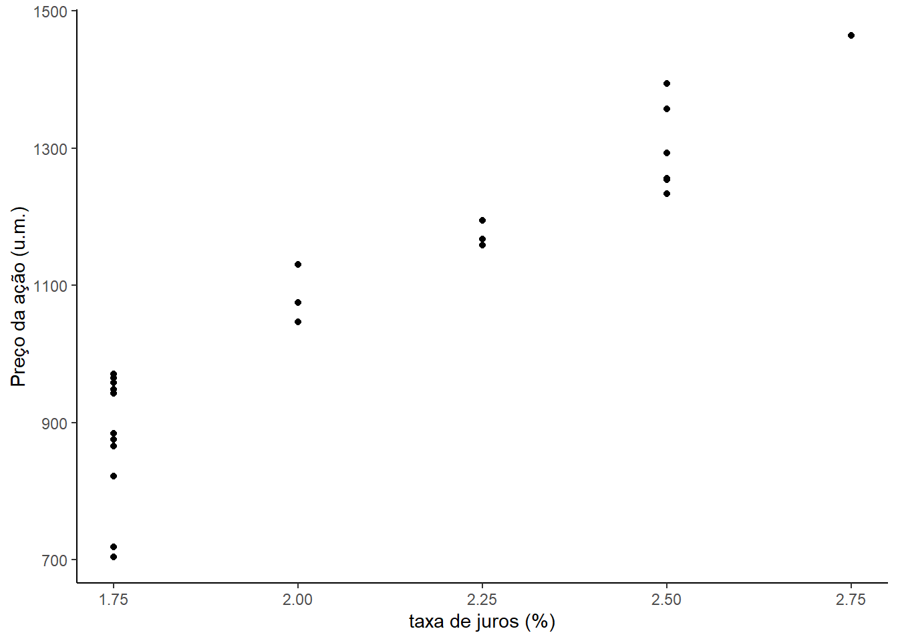
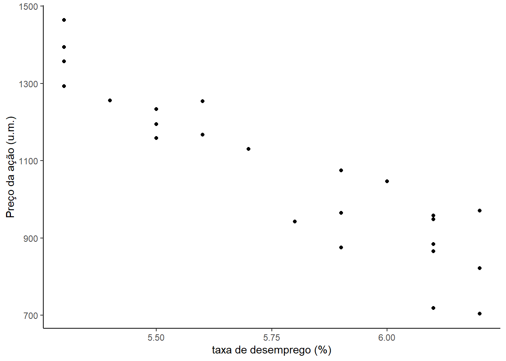
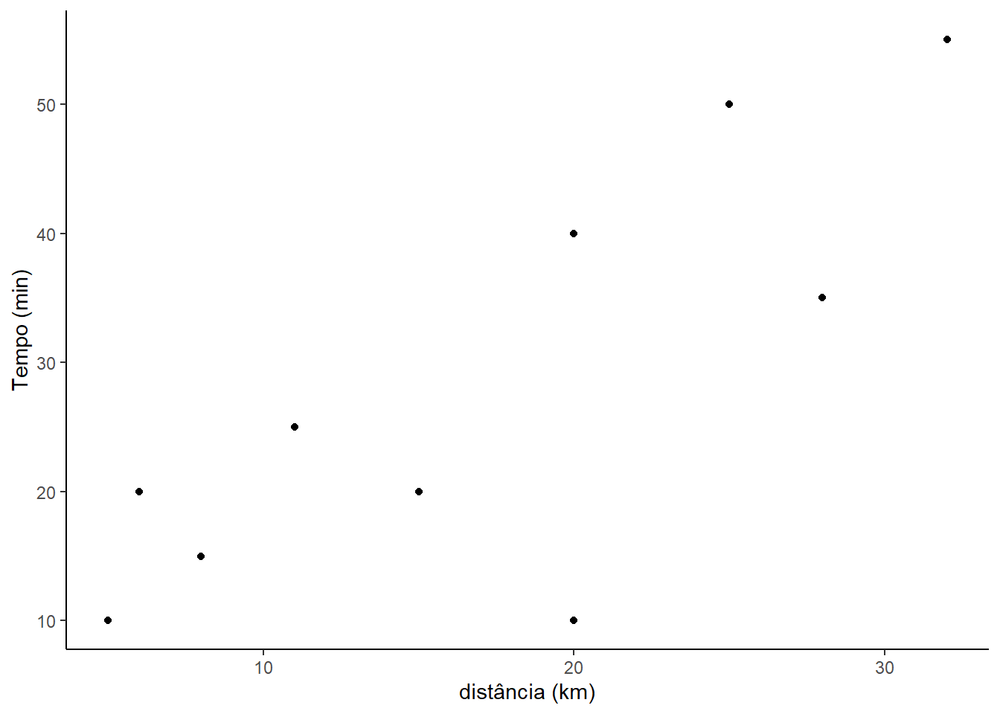
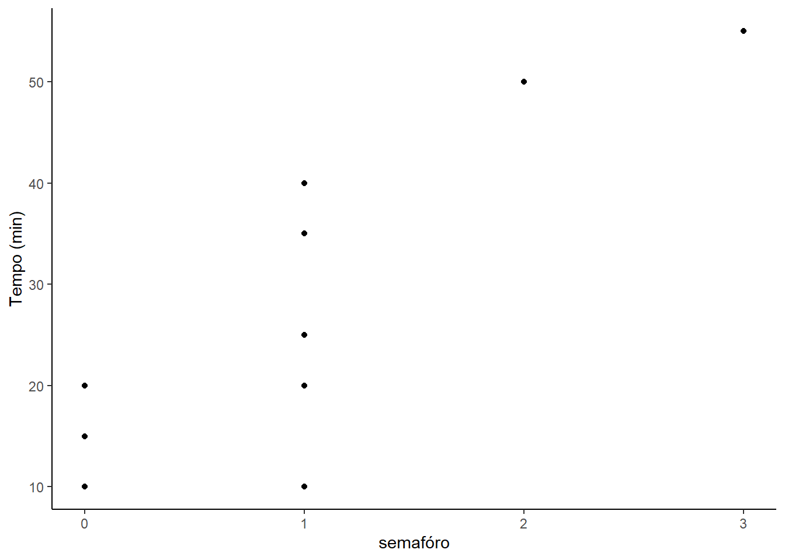

Chapter 8 Exemplos
8.1 Exemplo 1
Em uma economia fictícia, o objetivo é analisar os índices da bolsa de valores (stock_index_price), a variável dependente, com base em duas variáveis independentes:
- Taxa de juro
- Taxa de desemprego.
O dados analisados são os valores mensais observados no anos de 2016 e 2017.
| Ano | Mês | Taxa de juros | Taxa de desemprego | Preço da ação |
|---|---|---|---|---|
| 2017 | 12 | 2.75 | 5.30 | 1464 |
| 2017 | 11 | 2.50 | 5.30 | 1394 |
| 2017 | 10 | 2.50 | 5.30 | 1357 |
| 2017 | 09 | 2.50 | 5.30 | 1293 |
| 2017 | 08 | 2.50 | 5.40 | 1256 |
| 2017 | 07 | 2.50 | 5.60 | 1254 |
| 2017 | 06 | 2.50 | 5.50 | 1234 |
| 2017 | 05 | 2.25 | 5.50 | 1195 |
| 2017 | 04 | 2.25 | 5.50 | 1159 |
| 2017 | 03 | 2.25 | 5.60 | 1167 |
| 2017 | 02 | 2.00 | 5.70 | 1130 |
| 2017 | 01 | 2.00 | 5.90 | 1075 |
| 2016 | 12 | 2.00 | 6.00 | 1047 |
| 2016 | 11 | 1.75 | 5.90 | 965 |
| 2016 | 10 | 1.75 | 5.80 | 943 |
| 2016 | 09 | 1.75 | 6.10 | 958 |
| 2016 | 08 | 1.75 | 6.20 | 971 |
| 2016 | 07 | 1.75 | 6.10 | 949 |
| 2016 | 06 | 1.75 | 6.10 | 884 |
| 2016 | 05 | 1.75 | 5.10 | 866 |
| 2016 | 04 | 1.75 | 5.90 | 876 |
| 2016 | 03 | 1.75 | 6.20 | 822 |
| 2016 | 02 | 1.75 | 6.20 | 704 |
| 2016 | 01 | 1.75 | 6.10 | 719 |
library(ggplot2)
Ano <- c (2017,2017,2017,2017,2017,2017,2017,2017,2017,2017,2017,2017,
2016,2016,2016,2016,2016,2016,2016,2016,2016,2016,2016,2016)
Mes <- c (12,11,10,9,8,7,6,5,4,3,2,1,12,11,10,9,8,7,6,5,4,3,2,1)
taxa_de_juros <- c (2.75,2.50,2.50,2.50,2.50,2.50,2.50,2.25,2.25,2.25,2.00,2.00,
2.00,1.75,1.75,1.75,1.75,1.75,1.75,1.75,1.75,1.75,1.75, 1.75)
taxa_de_desemprego <- c (5.30,5.30,5.30,5.30,5.40,5.60,5.50,5.50,5.50,5.60,5.70,5.90,
6.00,5.90,5.80,6.10,6.20,6.10,6.10,6.10,5.90,6.20,6.20,6.10)
stock_index_price <- c (1464,1394,1357,1293,1256,1254,1234,1195,1159,1167,1130,1075,
1047,0965,0943,0958,0971,0949,0884,0866,0876,0822,0704,0719)
dados <- data.frame (stock_index_price, taxa_de_juros, taxa_de_desemprego)Visualização dos dados
Em uma regressão linear é necessário que cada variável independente tenha relação linear com a variável dependente. Essa relação pode ser verificado por
- gráfico de dispersão; ou
- pela meio da correlação de Pearson.
Segue o grafico de dispersão preço da ação em funçao da taxa de juros que mostra uma relação linear crescente.
ggplot(dados, aes(x=taxa_de_juros, y=stock_index_price)) +
geom_point()+
labs(x="taxa de juros (%)",
y="Preço da ação (u.m.)")+
theme_classic()
Agora é o grafico de dispersão do preço da ação em funçao da taxa de desemprego, já mostra uma relação decrescente entre essas variáveis.
ggplot(dados, aes(x=taxa_de_desemprego, y=stock_index_price)) +
geom_point()+
labs(x="taxa de desemprego (%)",
y="Preço da ação (u.m.)")+
theme_classic()
A correlações de Pearson são obtidas pela função cor(). Ao colocar um data frame como argumento da dessa função ela cria a matriz de correlação, que contém todas as correlações possíveis entre as variáveis numéricas.
cor1 <- cor(dados$stock_index_price,dados$taxa_de_juros)
cor2 <- cor(dados$stock_index_price,dados$taxa_de_desemprego)As medidas correlação entre as variáveis independentes e a variável dependente são próximas de 1 ou de -1, mostrando uma evidência de linearidade nessas relações:
A correlação entre preço da ação e taxa de juros é 0.94.
A correlação entre preço da ação e taxa de desemprego é -0.92.
Ajuste do modelo
O Ajuste do modelo será realizado por meio da função lm() e os resultados armazenados no objeto fit1 e a análise desses resutados será com base no relatório gerado pela função summary()
fit1 <- lm(stock_index_price ~ taxa_de_juros + taxa_de_desemprego, dados)
summary(fit1)##
## Call:
## lm(formula = stock_index_price ~ taxa_de_juros + taxa_de_desemprego,
## data = dados)
##
## Residuals:
## Min 1Q Median 3Q Max
## -158.205 -41.667 -6.248 57.741 118.810
##
## Coefficients:
## Estimate Std. Error t value Pr(>|t|)
## (Intercept) 1798.4 899.2 2.000 0.05861 .
## taxa_de_juros 345.5 111.4 3.103 0.00539 **
## taxa_de_desemprego -250.1 117.9 -2.121 0.04601 *
## ---
## Signif. codes: 0 '***' 0.001 '**' 0.01 '*' 0.05 '.' 0.1 ' ' 1
##
## Residual standard error: 70.56 on 21 degrees of freedom
## Multiple R-squared: 0.8976, Adjusted R-squared: 0.8879
## F-statistic: 92.07 on 2 and 21 DF, p-value: 4.043e-11Algumas observações do relatório:
O **R-quadrado ajustado reflete o ajuste do modelo, onde um valor mais alto geralmente indica um melhor ajuste
O coeficiente intercept é o valor de Y quando as variáveis independentes são zero.
O coeficiente taxa de juros é a mudança em Y devido a uma mudança de uma unidade na taxa de juros (todo o resto mantido constante).
O coeficiente taxa de desemprego é a mudança em Y devido a uma mudança de uma unidade na taxa de desemprego (todo o resto mantido constante).
O erro padrão reflete o nível de precisão dos coeficientes.
Pr (> | t |) é o p valor . Um valor de p inferior a 0,05 é considerado estatisticamente significativo.
8.2 Exemplo 2
Análise do tempo de deslocamento, em minutos, de casa à escola, em função da distância, em quilometros, e da quantidade de semafóros. A tabéla abaixo apresenta os dados.
| Tempo (min) | Distância (km) | Qtd. Semáforo |
|---|---|---|
| 15 | 8 | 0 |
| 20 | 6 | 1 |
| 20 | 13 | 0 |
| 40 | 20 | 1 |
| 50 | 25 | 2 |
| 23 | 11 | 1 |
| 10 | 5 | 0 |
| 55 | 32 | 3 |
| 35 | 28 | 1 |
| 30 | 20 | 1 |
Os dados serão armazenados no data frame dados nas variáveis
- temp - tempo de deslocamento em mínutos.
- dist - distância, em km, de casa à escola.
- semf - quantidade de semafóros no trajeto de casa a escola.
temp <- c(15, 20, 20, 40, 50, 25, 10, 55, 35, 10)
dist <- c(08, 06, 15, 20, 25, 11, 05, 32, 28, 20)
semf <- c( 0, 1, 0, 1, 2, 1, 0, 3, 1, 1)
dados <- data.frame (temp, dist, semf)Visualização dos dados
Em uma regressão linear é necessário que cada variável independente tenha relação linear com a variável dependente. Essa relação pode ser verificado por
- gráfico de dispersão; ou
- pela meio da correlação de Pearson.
Segue o grafico de dispersão preço da ação em funçao da taxa de juros que mostra uma relação linear crescente.
ggplot(dados, aes(x=dist, y=temp)) +
geom_point()+
labs(x="distância (km)",
y="Tempo (min)")+
theme_classic()
Agora é o grafico de dispersão do preço da ação em funçao da taxa de desemprego, já mostra uma relação decrescente entre essas variáveis.
ggplot(dados, aes(x=semf, y=temp)) +
geom_point()+
labs(x="semafóro",
y="Tempo (min)")+
theme_classic()
A correlações de Pearson são obtidas pela função cor(). Ao colocar um data frame como argumento da dessa função ela cria a matriz de correlação, que contém todas as correlações possíveis entre as variáveis numéricas.
cor1 <- cor(dados$temp,dados$dist)
cor2 <- cor(dados$temp,dados$semf)As medidas correlação entre as variáveis independentes e a variável dependente são próximas de 1 ou de -1, mostrando uma evidência de linearidade nessas relações:
A correlação entre
tempedisté 0.79.A correlação entre
tempesemfé 0.84.
Ajuste do modelo
O Ajuste do modelo será realizado por meio da função lm() e os resultados armazenados no objeto fit1 e a análise desses resutados será com base no relatório gerado pela função summary()
fit1 <- lm(temp ~ dist + semf, dados)
summary(fit1)##
## Call:
## lm(formula = temp ~ dist + semf, data = dados)
##
## Residuals:
## Min 1Q Median 3Q Max
## -19.8757 -1.0643 0.4369 2.7023 10.1243
##
## Coefficients:
## Estimate Std. Error t value Pr(>|t|)
## (Intercept) 7.7635 6.2345 1.245 0.2531
## dist 0.6252 0.4833 1.294 0.2369
## semf 9.6077 4.8754 1.971 0.0894 .
## ---
## Signif. codes: 0 '***' 0.001 '**' 0.01 '*' 0.05 '.' 0.1 ' ' 1
##
## Residual standard error: 9.028 on 7 degrees of freedom
## Multiple R-squared: 0.7583, Adjusted R-squared: 0.6892
## F-statistic: 10.98 on 2 and 7 DF, p-value: 0.006945Algumas observações do relatório:
O R-quadrado ajustado reflete o ajuste do modelo, onde um valor mais alto geralmente indica um melhor ajuste
O coeficiente intercept é o valor de Y quando as variáveis independentes são zero.
O coeficiente taxa de juros é a mudança em Y devido a uma mudança de uma unidade na taxa de juros (todo o resto mantido constante).
O coeficiente taxa de desemprego é a mudança em Y devido a uma mudança de uma unidade na taxa de desemprego (todo o resto mantido constante).
O erro padrão reflete o nível de precisão dos coeficientes.
Pr (> | t |) é o p valor . Um valor de p inferior a 0,05 é considerado estatisticamente significativo.
8.3 Exemplo 3
Será estudada a relação do tempo de deslocamento, de casa para a escola, com o a distãncia e número de semáforos. Esse estudo foi já foi realizado Exemplo 2 por meio de matrizes. As variáveis são
- temp - tempo de deslocamento em mínutos.
- dist - distância, em km, de casa à escola.
- semf - quantidade de semafóros no trajeto de casa a escola.
dessas a variável temp é a variável dependente e dist e semf são as variáveis independentes.
temp <- c(15, 20, 20, 40, 50, 25, 10, 55, 35, 10)
dist <- c(08, 06, 15, 20, 25, 11, 05, 32, 28, 20)
semf <- c( 0, 1, 0, 1, 2, 1, 0, 3, 1, 1)
Y <- matrix (temp,nrow=10,ncol=1)
Y## [,1]
## [1,] 15
## [2,] 20
## [3,] 20
## [4,] 40
## [5,] 50
## [6,] 25
## [7,] 10
## [8,] 55
## [9,] 35
## [10,] 10X <- matrix (c(c(1,1,1,1,1,1,1,1,1,1), dist,semf), nrow =10, ncol=3)
X ## [,1] [,2] [,3]
## [1,] 1 8 0
## [2,] 1 6 1
## [3,] 1 15 0
## [4,] 1 20 1
## [5,] 1 25 2
## [6,] 1 11 1
## [7,] 1 5 0
## [8,] 1 32 3
## [9,] 1 28 1
## [10,] 1 20 1Cálculo dos betas
Os betas são estimados por
\[\begin{equation*} \beta = (X^\prime X)^{-1}X^\prime Y \end{equation*}\]
beta <- solve((t(X)%*%X))%*%t(X)%*%Y
beta## [,1]
## [1,] 7.7635256
## [2,] 0.6252239
## [3,] 9.6076675Calcular o erro padrão de \(\beta\)
A matriz de variância e covariância de \(\beta\) é estimada por
\[\begin{equation*} cov\left(\hat{\beta}\right) = \left(X^\prime X\right)^{-1}\sigma^2 \end{equation*}\]
onde \(X\) é a matriz de dados e \(\sigma^2\) é estimada por
\[\begin{equation*} \hat{\sigma}^2 = \frac{Y^\prime Y - \hat{\beta}^\prime X^\prime}{n - p -1} \end{equation*}\]
onde
\(n\) - número de observações.
\(p\) - número de variáveis dependentes.
\(X\) - matriz de dados.
\(Y\) - dados observados.
Essa matriz em sua diagonal apresenta estimativas para as variâncias dos estimadores dos parâmetros \(\beta\), e fora da digonal, estimativas das covarâncias entre as estimativas desses parãmetros.
# número de observações
n = 10
# número de variáveis independentes
p = 2
# cálculo da sigma^2
sigma_square = as.vector((t(Y)%*%Y - t(beta)%*%t(X)%*%Y)/(n-p-1))
sigma_square## [1] 81.49972# matriz de variância e covariãncia de beta
cov_beta <- solve(t(X)%*%X)*sigma_square
cov_beta## [,1] [,2] [,3]
## [1,] 38.869321 -2.1900677 6.511801
## [2,] -2.190068 0.2336072 -1.781255
## [3,] 6.511801 -1.7812550 23.769535# cálculo do erro padrão de beta
var_beta <- diag(cov_beta)
std_erro_beta <- sqrt(var_beta)
std_erro_beta## [1] 6.2345265 0.4833293 4.8754010